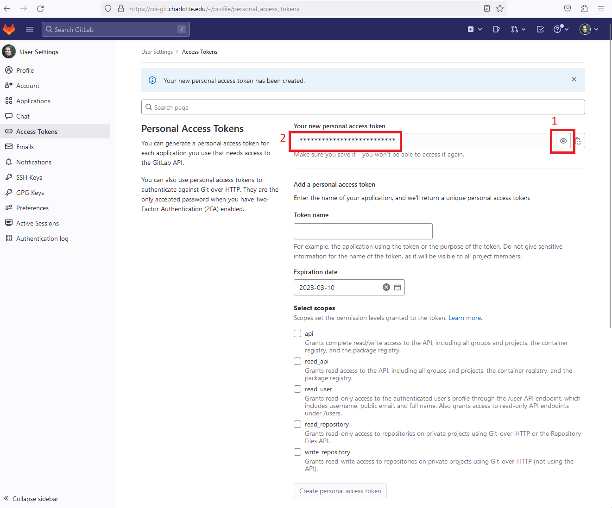
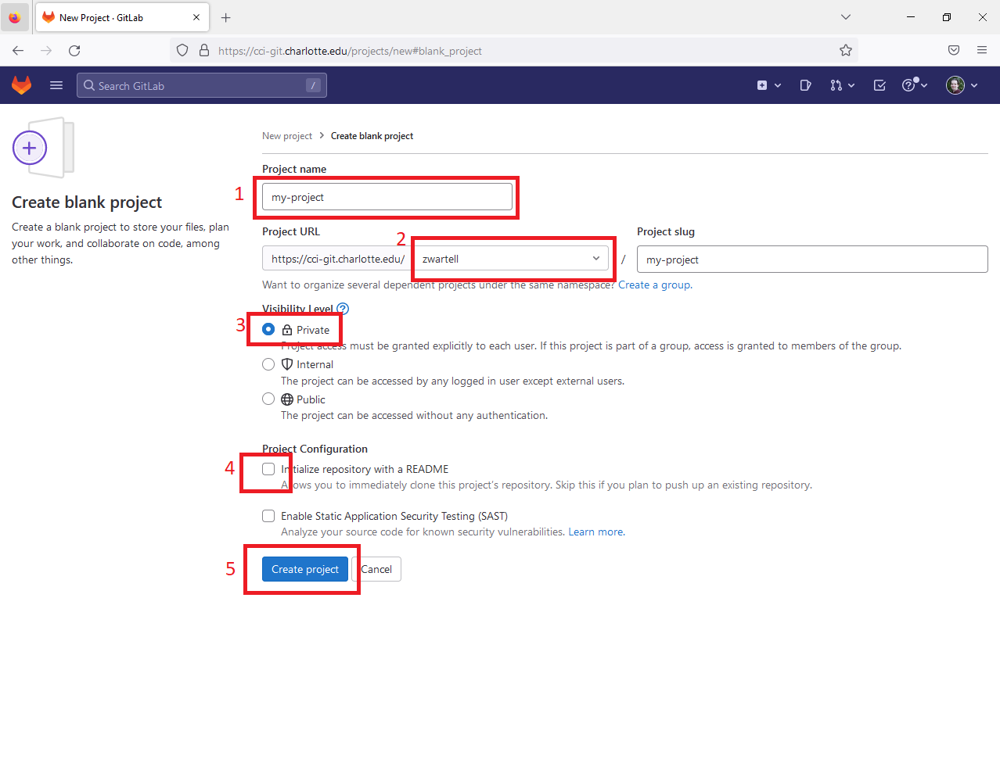
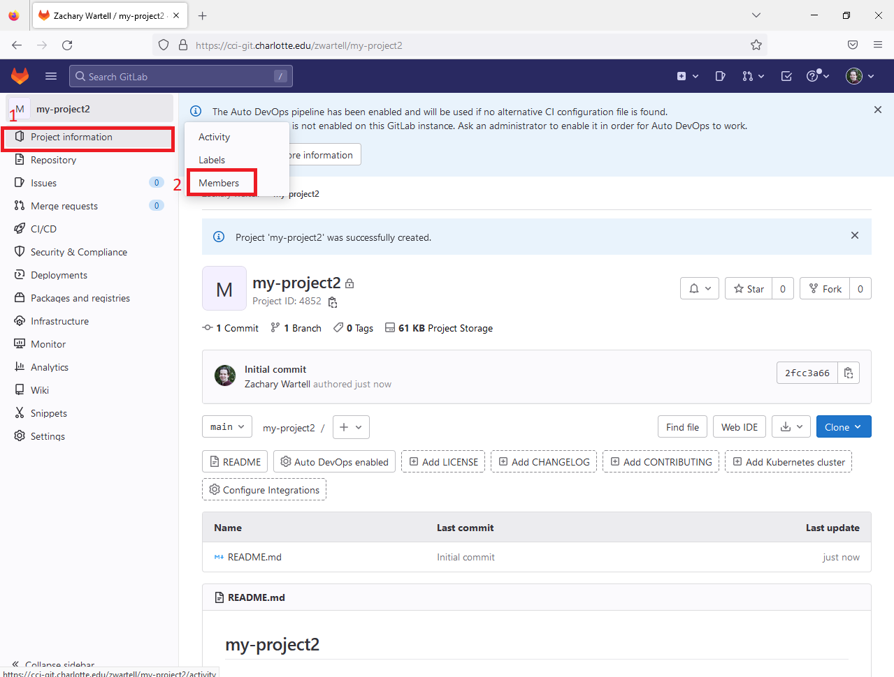
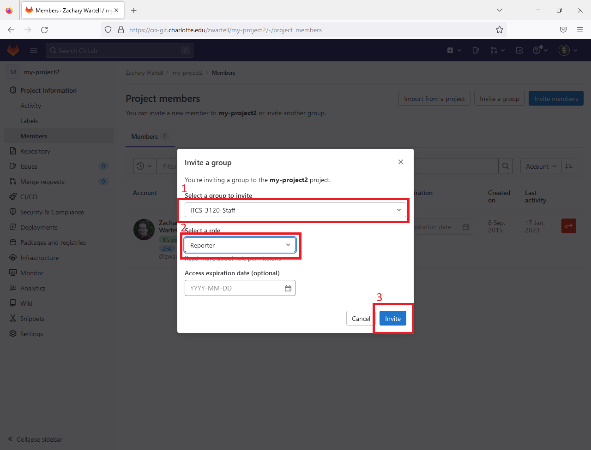
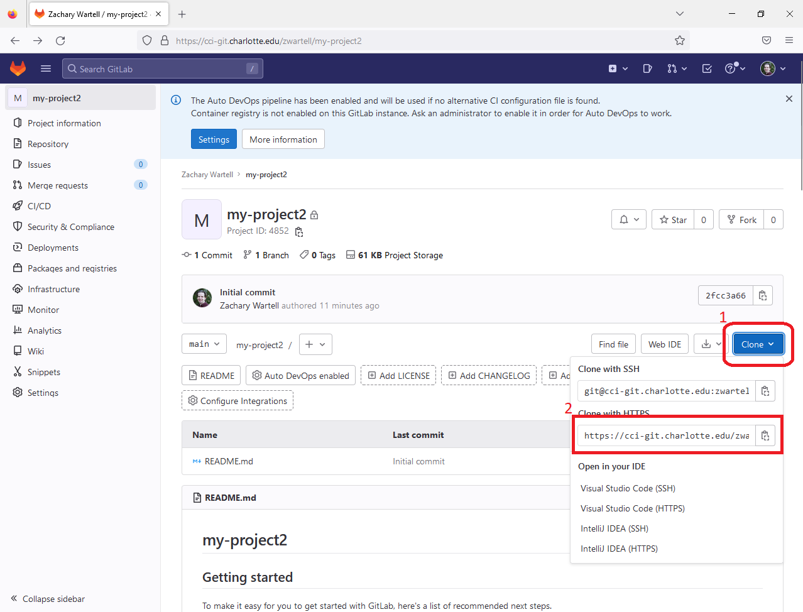

This is a gradable tutorial built around the excellent book, Pro Git
by Scott Chacon (http://git-scm.com/book).
The tutorial is customized for the computing environment in CCI at UNC
Charlotte and targzets courses taught by the author, Prof. Zachary
Wartell.
Document Configuration
Parts of this document are specific to particular operating systems,
and particular Git servers. In general, your instructor
will tell you what git server to use for your class and will tell you
what operating systems are allowable in your class.
Information for some specific courses is also given below:
[Course=ITCS 3120 - Spring 2023] In this course all
student submissions are to cci-git.charlotte.edu.
Regarding operating systems, any OS is acceptable as long as it
supports command-line git and the Chrome browser.
Using the course specific information, select the Git server and
operating system you are using in the dialog below. Doing
this will display the relevant sections of this document and hide the
non-relevant ones.
Prerequisites
This assignment assumes the reader has prerequisite knowledge of
several topics. Elaboration on these topics and additional
resource materials are placed in sub-sections of this assignment at
the points when the knowledge is first needed. Such sub-section
have headings that are prefixed with the phrase
"[Pre-Req,]". For convenience, the complete list of
prerequisite topics are also listed below.
Bash Command-Line Shell -
Environment Variables
Guide to
Reading these Instructions
Generic vs Specific Instructions: Various
sections, sub-sections and specific numbered instructions are either
“generic” or "specific" to a particular operating system or Git
server. When there is a list of instructions that vary for each
specific system, these instructions are numbered using Greek
letters: α,β, γ, etc. -- this indicates the reader should perform
only one of the listed instructions.
Server:
For ITCS 3120 Spring 2023, students must use the CCI Git Server:
cci-git.uncc.edu
Operating System:
For ITCS 3120 Spring 2023, you will be developing using
cross-platform Web tools.
The process for setting up these tools differences across operating
systems. Therefore, instructions in this document that are specific
to a particular operating system will have the following headings:
[OS=Windows]
[OS=Linux]
[OS=Mac]
As long as you configure the settings in the
Document Configuration section (above), then the detailed
instructions will only be displayed for the operating system you
selected (while the details for the other os's will remain
hidden).
Screen Shot Figures: Most screen captures in this document
can be zoomed to full size by clicking on the image.
Click anywhere outside the zoomed image to return the image to its
original size. For example, click on the image below:
Fonts:
your_user_id – this indicates
you should input a specific text string. The specifics will be
indicated in the instructions.
(your_uncc_user_id is your UNCC
Single-Sign-On user id -- akka your NinerNET credentials;
typically this is same as your UNCC email without the
@uncc.edu).
path_to_a_directory_where_you_can_save_your_work
– this indicates you should input a specific text string. It is
assumed the reader can interpret what to type based on the
context and their general computer science knowledge.
[…additional output will
appear…] – this a comment describing output from a
command-line command.
Shell Code Examples: Shell code instructions appear in
black boxes. For lengthy code examples there is an interactive
scroll bar on the right. Additionally, on the right there is a
button, ▽ ,
clicking the button will expand the box to display it's entire
contests without scrolling. An example is below:
lucretius@CCIWD-435B-1 ~/ITCS_4120 $ ls -la total 20
drwxr-xr-x 1 lucretius 197609 0 Sep 23 21:57 ./
drwxr-xr-x 1 lucretius 197609 0
Sep 23 21:37 ../
-rw-r--r-- 1 lucretius 197609 0
Sep 23 21:55 'The Hitchhickers Guide to the Galaxy.azw'
-rw-r--r-- 1 lucretius 197609 0
Sep 23 21:36 'On the nature of things - Lucretius.pdf'
-rw-r--r-- 1 lucretius 197609 0
Sep 23 21:56 'Ethica - Spinzoa.pdf'
-rw-r--r-- 1 lucretius 197609 0
Sep 23 21:57 'Moses the Egyptian: The Memory of Egypt in
Western Monotheism.azw'
-rw-r--r-- 1 lucretius 197609 0
Sep 23 21:37 Notes.docx […misc additional
output will appear…]
Installing Git
Git is a command-line client program that runs on your computer
communicating to a Git server. Git servers uses various access
protocols for security and authorization. Depending what access
protocol your designated Git server uses you may need to have or
install additional software beyond command-line Git.
Depending on what computer you are working on, you may need to
install the Git client tools.
Woodward Labs: Windows computers in Woodward labs
should have both the command-line Git, Bash, OpenSSH and TortoiseGit
installed. Most Linux installations install these tools by default.
If you are using UNCC computers with a different operating system
please email the TA.
This installs a minimal Unix style shell (called
‘git-bash’), the basic OpenSSH tools and git. During
install select the options indicated in the sequence below:
Note, git-bash does not install the standard Unix 'man'
command which allows you to read the standard "Manual" pages
for all Unix commands. You can get some basic
information for any command by typing a command name with
just the parameter --help. To
find the complete man pages for a given Unix command, we
suggest using https://www.gnu.org/manual/manual.en.html.
(There are ways to install the Unix man command and man
pages into git-bash, but it is generally not worth
the effort).
[YourOS=Linux] Typically, default
Linux/Unix installations include Git. If Git is not
installed, then download and install Git from http://git-scm.com/.
If Unix style command-line shells are new for you, read the
introduction at [WART2021]
. Linux and MacOS have a Unix style shell (bash or otherwise)
built-in.
[Pre-Req.] Command-Line Interface Shell
The remainder of this assignment assumes you have knowledge of
the material listed below. Each listed topic contains
recommended reading if you do not already know the topic.
Bash Command-Line Shell: The git instructions
in this assignment and the Pro Git book use Bash, a
particular command-line shell [WP2023].
You need to have basic mainy of the Bash shell. A short
introduction is [WART2021].
Environment Variables: Regarding
environment variables, the reader should understand environment
variables: what they are and how to modify them. In
particular knowledge of the PATH environment variable is
required. A general discussion is found at [WP2016a] and with specifics on PATH at [WP2016b].
The method to modify environment variables differs across
operating system. See [Microsoft2016]
for Windows or [Apple2016]
for MacOS.
[Optional] Installation and Setup of Git GUI’s
Generally, the Git instructions in this document and any Git
instructions given in this course will be given using Git
command-line example code. But many GUI Git tools are
available as well. Use of GUI Git tools is optional.
[YourServer=cci-git.uncc.edu] For any course
using cci-git.uncc.edu, skip Section 4. OpenSSH is not supported on
cci-git.
[YourServer=Bitbucket]
This section is for Git servers that use the SSH protocol and the
SSH public-key mechanism is for security and authorization. Your
computer needs to have OpenSSH installed.
Download and
Install OpenSSH
If you are working from a UNCC lab computer that already has Git
for Windows and Putty installed, skip this section and go to the
next section.
Instructions below vary with your operating system.
[YourOS=Windows]
Download and install PuTTY as follows:
Download the Windows installer,
putty-x.xx-installer.exe, from http://www.putty.org/.
Install it.
Modify the PATH environment variable (Read
Prerequisite P2).
Add to the end of PATH the directory to where PuTTY is
installed. Typically PuTTY is at "C:\Program Files
(x86)\PuTTY".
To verify the PATH setting:
Open a git-bash shell via Start Menu→Git→Git
Bash
In the shell run plink:
lucretius@CCIWD-435B-1 ~/ITCS_3120
$ plink
PuTTY Link: command-line connection
utility
Release 0.63
Usage: plink [options] [user@]host
[command]
("host" can also be a PuTTY saved
session name)
[…misc additional output will
appear…]
[YourOS=Linux] Generally this OS
already has OpenSSH installed; if not see http://www.openssh.org/.
If you are already familiar with SSH private and public keys and
you already have a public SSH key that you use regularly, then
skip to step 4 below, but if you are using Windows still do
Section Windows_Create_PuTTY_Private_Key
.
Key creation has to be done only once. Afterwards, you can re-use
your private key file for authorized access to the Git server from
multiple computers.
The instructions below are fairly generic to any Unix like shell
and assume basic knowledge as per Prerequisite P2.
lucretius@CCIWD-435B-1 ~/ $ cd ~/.ssh
$ ls […misc
additional output will appear…]
Check the directory listing for a file named id_rsa.pub.
This file should not exist, unless you must have
previously created a public/private key pair. If you already
created one, goto step 4. Otherwise proceed with step 3.
lucretius@CCIWD-435B-1 ~/ $ ssh-keygen
-t rsa -C "your_email@uncc.edu"
[Use your
UNCC email] Generating
public/private rsa key pair.
Enter file in which to save the key
(/home/Zachary/.ssh/id_rsa):
[Press Enter]
Now you need to enter a passphrase. Enter one
and write it down in a safe place. When using Git, you will
have to enter this each time you login to your computer.
Enter passphrase (empty for no passphrase): [Type a passphrase] Enter same passphrase
again:
[reenter the passphrase]
You will see output similar to this:
This creates two files a private key file id_rsa
and a public key file id_rsa.pub.
The private key file must be kept in a secure directory and
must be available on any computer from which you plan to
access the Git server.
Securing Your Private Key:
Best practices for private key management are that you never
store the private key on a public computer or in shared home
directories (H: drive, etc.). Rather you store them on your
personal computer(s) and on a USB device used solely as a SSH
key backup device. A reasonable way to transfer the private
key to another personal computer is using a USB device.
If you intend to use Git on multiple, different public or
shared computers on campus, keeping the private key on a USB
stick or drive that you regularly carry is a reasonable
compromise. (If you are certain you will never use
this key again outside of one particular course, it’s
acceptable to store it on your H: drive since the course TA
will disable your Git account at the end of the semester.)
id_rsa.pub is a plain text
file. (Some operating systems may incorrectly
identify the file as some other type of file). Open
id_rsa.pub using your preferred
text editor (such as notepad.exe, etc.). If
you ever need to copy and paste the public key into another
application (web browser, etc.) you can do that from within the
text editor.
Login to https://cci-git.uncc.edu/
using your standard UNCC username and password. You
should then see your "Dashboard" (below). Select Profile Settings
Select "SSH Keys"
Select "Add SSH Key"
Cut and paste the text from yourpublic
key file into the dialog box, give the key a title,
and press Add Key:
then the following is required to generate PuTTY compatible
version of your private key.
Run PuTTYgen:
Start Menu →Putty→PuTTYgen
From the PuTTYgen menu bar select Conversions
and then Import Key on the
drop-down menu.
This pop’s up dialog: Load Private
Key.
In Load Private Key find
the private key file you created in Create_an_SSH_private_and_public_key
and open it. You will be prompted for your
passphrase.
In the PuTTY Key Generator window
select Save Private Key.
Save the key to a file named id_rsa.ppk
in the same directory as where you stored your standard
private key file.
You should do only either the Full Tutorial or the Micro
Tutorial. To do only the Micro Tutorial, you need to get
approval from the course instructor as described below.
The Full Git Tutorial requires reading chapters in the ProGit book
and completing a number of exercises.
The Micro Git Tutorial is for students already familiar with Git and
with using the Git command-line interface using a operating system
shell such as Bash.
To get approval to do the Micro Tutorial, you must:
Submit a short statement through the Micro Tutorial Canvas
assignment
Receive approval feedback from the professor through that Canvas
assignment
Complete the Micro Tutorial instructions in Section 7 (skipping
Section 6, of course).
initial refspec: main vs master
When you create a git repository, it is given a default name called a
"refspec". Roughly, a refspec is string that names the version of the
repo with which you are currently working. In the broader use of git,
git is designed to and track and manage multiple differing versions of
a repo where the versions are called "branches" in git terminology. A
branch can be identified by a string name call it's refspec. The early
convention when a repo was created was to use the name "master" (as in
a master
recording or a master
key). It is increasingly common to instead use the name "main".
The git program does not specify any particular initial name -- it is
determined by the git repo's creator. Some WWW git servers provide a
default which is changeable.
The instructions steps labeled “Exercise: PG: Section_Name”
you need to perform the details in the ProGit ("PG") section named "Section_Name"
and save your work.
can perform 99% of the below exercises even without access to the Git
server, but to submit your exercises (via git
push) you will need git server access.
You will submit the entire set of exercises with a final
git push. For some exercises, the outline below has
additional instructions or clarifications in paragraph's labeled Notes:
Exercise: Create git-tutorial
directory
Open a operating system shell prompt.
Create a directory called ‘git-tutorial’ for performing and
saving the exercises (commands mkdir, etc. again see [WART2021] .)
Exercise: Create and Setup Git Server
Access.
Create and setup your account on the Git server used in your
class and setup the recommended git client access method as
described in the Appendix I-3 Git_Server_Access,
ProGit - Chapter 1:
Read ProGit 1.1 – 1.4
Skip ProGit 1.5 (this was covered in this tutorial’s Installing_Git).
Read ProGit 1.6. Also for the chapter subsections list
below, do the subsections described exercises using command-line
git.
Read the first few paragraphs, until sub-section Initializing
a Repository in an Existing Directory
Exercise: Download the required practice files,
'my_project.tar.gz', as described below.
Sub-section "Initializing a Repository in an Existing
Directory" assumes you have created a set of files
in a directory called 'my_project'. To create and
get these files, in your browser click the following link to
download these files: my_project.tar.gz.
After downloading copy the file to your git-tutorial
directory. Then uncompress the tar.gz file as follows:
ada@turing42
~/ITCS_3120 tar -xf my_project.tar.gz ada@turing42
~/ITCS_3120 ls -R .:
my_project my_project.tar.gz
./my_project:
main.c LICENSE
ada@turing42
~/ITCS_3120 rm my_project.tar.gz
[don’t
need this anymore] ada@turing42
~/ITCS_3120 cd my_project
Perform the book’s exercises. This will create various
clones of a remote repo mentioned in the book in your git-tutorial
directory.
Exercise: Push the pre-existing local repo
to a remote repo.
Create a remote repository on the git server called my-project. (Note,
there is a strong convention to name the URL remote repo's
with lower case and only dash's (-), no spaces are
underscores (_)).
Follow the instructions in Appendix II "How
to Create New Remote Repository"
To connect your local repo to the remote repo do as
shown below, where URL of my-project
is the full URL of the remote repo.
ada@turing42
~/ITCS_3120/my-project git remote add
origin URL
of my-project ada@turing42
~/ITCS_3120/my-project
git
push origin main t [
the credential manager that you install will
now prompt you for your user id and PAT] Enumerating
objects: 3, done.
Counting objects: 100% (3/3), done.
Writing objects: 100% (3/3), 211 bytes |
211.00 KiB/s, done.
Total 3 (delta 0), reused 0 (delta 0),
pack-reused 0
To
https://cci-git.charlotte.edu/zwartell/my-project.git
* [new
branch] main
-> main
Read ProGit 2.2:
Download the required practice files,
'ProGit_Chapter_2_2.tar.gz'.
In your browser click the following link to download these
files: ProGit_Chapter_2_2.tar.gz.
Then uncompress the tar.gz file as follows:
1645
ada@turing42
~/ITCS_3120/git-tutorial/my-project cd .. ada@turing42
~/ITCS_3120/git-tutorial ada@turing42
~/ITCS_3120/git-tutorial tar -xf
ProGit_Chapter_2_2.tar.gz ada@turing42
~/ITCS_3120 <
rm ProGit_Chapter_2_2.tar.gz
[you can delete this now] ada@turing42
~/ITCS_3120 0/git-tutorial cd ProGit_Chapter_2_2
Perform the Chapter 2.2 exercises in the Chapter_2_2
directory.
To connect your local repo to the remote repo do as
shown below, where is the full URL of
the remote repo.
ada@turing42
~/ITCS_3120/git-tutorial/ProGit_Chapter_2_2
git remote add origin URL
of my-project ada@turing42
~/ITCS_3120/git-tutorial/ProGit_Chapter_2_2
git
push origin main t [
the credential manager that you install will
now prompt you for your uzwartenm and PAT]
Exercise [Optional]: GUI Git Tool; These exercises
are optional. optional.
[YourOS=Windows]
Exercise:
Using TortoiseGit, open an Explorer window and goto the
Chapter_2_2 directory.
Right-click to see the TortoiseGit shell extension
commands. Test and explore the following TortoiseGit
operations from the menu: Show Log, Check for
Modifications, Repo-Browser and Diff, Diff with previous
and Help.
TortoiseGit Help “Chapter 3. Daily Use Guide”
discusses TortoiseGit (the earlier TortoiseGit Help
chapters are largely redundant with the ProGit book)
[YourOS=Linux/Mac]
This tutorial document does not proscribe any particular
GUI Git tool. Feel free to experiment with whatever
one you prefer. This step (iv. GUI Git Tool)
has no deliverables, so you can skip this step if you
want.
Exercise: PG:
Viewing Your Staged and Unstaged Changes -
perform all steps
Note: When the book discusses making changes to
various files, just make any small change to each file.
Do the first two exercises, cloning simplegit-progit into:
git-tutorial\simplegit-progit
Stop at the chapter's instruction “$ git log -p -2“.
Exercise: Forking simplegit-progit Forking is a more advanced concept used to borrow and
contribute to a code module developed by someone else. Forking
is used when they have made the module available on a remote
repo from which you may clone, but to which you do not
have permission to push (because they are the
creator/maintainer of the module). In many fork workflows,
your forked copy would reside on the same git server hosting
the developer's remote repo. However, in this exercise you
will use an alternate fork workflow where your forked copy
resides on cci-git while the developer's repo resides on
GitHub. To fork simplegit-progit do as follows:
ada@turing42
~/ITCS_3120/simplegit-progitgit
remote rename origin upstream [This renames the
source repo to 'upstream', a common
convention] ada@turing42
~/ITCS_3120/simplegit-progitgit
remote add origin URL
of your repo created above [This
associates the origin ref with your remote
repo] ada@turing42
~/ITCS_3120/simplegit-progitgit
push origin --all [This pushes
all tags to your remote repo]
Exercise: Verify all your pushed remote repositories on
your Git server following the instructions in Section
Verify Your Remote Repository ).
Further Reading [Optional]: As you progress in
learning and using Git, the next most important concept to learn is
branching. This tutorial does not include any branching exercises. For
future reference, at some point you should finish reading ProGit
Chapter 2 and then read the ProGit Chapter 3
Git Branching .
This completes the Full Git Tutorial.
Micro Git Tutorial
The micro tutorial, is not so much a tutorial, as simply a quick
verification that you have full read/write access to your remote
repository on the Git server. For most courses, students must
ask the professor via email for permission to perform this micro
tutorial and to skip the full git tutorial. (At the professor's
discretion, in certain advanced courses, all students will be directly
instructed to just perform the Micro Git Tutorial).
Exercise: Shell / Git Setup The first time git is used in bash (or in another
equivalent shell), youneed to
perform some git configuration steps. If
youinstalled bashfor the first
timeon your computer, or if you are using git for
the first time within another shell you choose to use, then you need
to perform the following:
Read ProGit 1.6. This chapter subsection and do the
subsection's described exercises in the shell:
Exercise: Create and Setup Git
Server Access.
Create and setup your account on the Git server used in your class
and setup the recommended git client access method as described in
the Appendix I-3 Git_Server_Access,
Then use the shell you opened when following that section’s
instructions to perform the next steps.
Create a new remote repo:
[YourServer=cci-git]
Create new remote repo on cci-git
called, git-micro-tutorial.
using the procedures of Appendix I-3 Git_Server_Access.
Do not forget to to share your repo
with the TA and Professor (as discussed in the Appendix
section Basic Git
Operations).
Create local repo and link to the new remote
repo:
In the instructions below, for input
text remote_repo_path, substitute
one the following: In the instructions below, for input URL of remote repo use the URL as listed
on the server (see Appendix section Basic
Git Operations). for details).
This appendix describes access methods specifics for different Git
servers. Your instructor will tell you which server you should use
(review Section Guide
to Reading these Instructions).
This appendix is designed as a reference. The tutorial sequence (found
in Sections 1-6) and future class assignments refer to various
subsections in this Appendix.
cci-git.uncc.edu
URL List
[YourServer=cci-git]
Access cci-git.uncc.edu using
the HTTPS protocol. Below is a list of the URL’s you will
typically use. See Section Accessing_Git_Server_Using_HTTPS_and_Credentials
for instructions on accessing these git URLs.
Your user name and password for all access to cci-git is your UNCC
username and password.
Student Repository: The Git URL is: https://cci-git.uncc.edu/your_uncc_user_id/name_of_repo_you_created.git
Course Repository: The course repo’s and material will
be found at URL’s such as:
You only need to access the website via web browser when
creating new repositories and for GitLab specific
operations. Most, git operations will be performed
using the Git command-line.
Git
Authentication Protocols
Git servers support numerous authentication protocols. Use the
protocol in the sub-section below that is listed as being recommended
for the Git server used in your class.
Git
Server Personal Access Token Protocol
[YourServer=cci-git]
cci-git is a GitLab server. The recommended protocol is the
Personal Access Token (PAT) protocol.
Creating an Access Token
You only have to create the access token once for your cci-git
account. You then save the token (like a password) and
re-use it every time you access the cci-git server.
In your browser sign in to cci-git.uncc.edu.
You will be prompted for by the UNCC SSO for your standard
UNCC user id and password.
In the upper-right corner, click your avatar and select Settings.
On the User Settings
menu (left side), select Access
Tokens.
Choose a name and optional expiry date for the token.
Save the personal access token somewhere safe. In the
screen shot below (1) unhide the PAT and then (2) copy the
PAT code. Note this PAT code is essentially a password
and you should treat it as such. If you navigate away or
refresh your page, and you do not save the token, you will
have to create a new one.

Verifying the Access Token
Now, to test and verify read-access to the server, clone
the welcome repo:
Note, the access token will be recorded in the git
remote, which is demonstrated at follows. This
implies you do not want to use the Access Token
Protocol to clone into a directory that is not secure and
only accessible by yourself.
$
git remote -v origin
https://Your
UNCC user id>:your_access_token@cci-git.uncc.edu/zwartell/welcome.git
(fetch)
origin https://Your
UNCC user id>:your_access_token@cci-git.uncc.edu/zwartell/welcome.git
(push)
Using of the Access Token
In the future, whenever you use git bash to git clone a repo
from cci-git.uncc.edu, you first determine the standard repo URL
such as:
When performing a git clone, you use the extended PAT syntax URL
shown below:
https://Your UNCC user id>:your_access_token@cci-git.uncc.edu/user_or_group_name/repo_name.git
However, this extra typing can be avoided if you install a Git
Credential Manager which is described next.
Using PAT with a
Git Credential Manager
By default, the HTTPS with PAT protocol requires you to
frequnetly enter your UNCC username and PAT
password. This also leaves your PAT password
visible via the command git remote -v.
Installing a Git Credential Manager can avoid these two
issues Depending on your operating system, this
may require installing additional software .
However, it is generally worth the effort. The
steps are as follows:
When prompted for you userid ID and password, you
must enter you UNCC userid and your PAT password.
Henceforth when you perform git command-line operations, you can
now use the standard repo URL, rather than the extended PAT
syntax URL.
Git
Server SSH Protocol
[YourServer=cci-git.uncc.edu] - SSH is not
recommended for cci-git.. Use the Git
Server Access Token Protocol instead. (Past
semesters the SSH protocol has been blocked by various on-campus
firewalls and/or prone to disconnection in the middle of Git
operation).
Staff Note: Since it's inception,
cci-git.uncc.edu had limited access via ssh. UNCC
wireless seemed to block ssh or drop ssh connections
intermittently. Further, sometime in 2019/2020 (?) UNCC
OneIT seems to have blocked all off-campus ssh access, even
for faculty connecting with VPN. Dr. Wartell's
experience indicates this further security locking down will
never change.
[YourServer=Bitbucket]
For servers using the SSH access method, this section covers:
Starting and logging into an ssh-agent
daemon in a command-line.
Example Git operations using the Git server.
[Linux/Mac]
Starting the ssh-agent daemon
These steps much be done each time you login into a
computer if you want to access the Git server. They start
the ssh-agent daemon process which manages Git’s
authentication to the Git server.
These steps will only work after you submit you public key
to the TA and he has confirmed that it has been added to the
Git server.
Start your command-line shell
Start the ssh-agent
daemon process
This starts a ssh-agent
daemon and a new bash shell that is setup to communicate
with the ssh-agent
daemon.
Load your private key into the ssh-agent daemon.
To verify ssh-agent access:
[YourServer=cci-git]
$ ssh git@cci-git.uncc.edu
The server's host key is not cached in the
registry. You
have no guarantee that the server is the
computer you
think it is.
The server's rsa2 key fingerprint is:
ssh-rsa 2048
aa:32:4a:f4:4e:96:bc:cb:46:3d:b9:de:64:bc:19:ef
) [^ exact
number may differ ^]
If you trust this host, enter "y" to add
the key to
PuTTY's cache and carry on connecting.
If you want to carry on connecting just
once, without
adding the key to the cache, enter "n".
If you do not trust this host, press
Return to abandon the
connection.
Store key in cache? (y/n)
[TYPE yes]
Warning: Permanently added
‘cci-subv.uncc.edu,10.18.2013.162’ (RSA)
to the list of known hosts.
Using username "git".
Server refused to allocate pty
Welcome to GitLab, zwartell.
[zwartell will be your username]
[YourServer=bitbucket]
The aboveverifiesyourssh-agent is successfully passing your key
through ssh to Bitbucket.
To verify read-access to the welcome repo do as
follows:
For input text welcome_repo_path
below, substitute the following based on your server::
$ git clone welcome_repo_path
The authenticity of host ‘cci-subv.uncc.edu’
(10.18.203.162)’ can’t be established.
RSA key fingerprint is
e2:6f:ac:ff:a3:30:a2:0e:c2:d6:98:f4:78:55:c5:7f.
Are you sure you want to continue connecting
(yes/no)?
[type yes]
Warning: Permanently added
‘cci-subv.uncc.edu,10.18.2013.162’ (RSA) to
the list of known hosts. […the above
will only appear the first time you connect
to the git-viscenter …]
Cloning into 'welcome'...
remote: Counting objects: 6, done.
remote: Compressing objects: 100% (4/4), done.
remote: Total 6 (delta 0), reused 0 (delta 0)
Receiving objects: 100% (6/6), 5.50 KiB | 0
bytes/s, done.
Possible Errors : If you are prompted for
a password here, either the ssh-agent daemon is not setup
right or your public key has not been registered yet.
[Windows] Starting the ssh-agent daemon
When you login into a computer from which want to connect
to your Git server, you must perform these steps once. The
steps start the ssh-agent daemon which manages Git’s
authentication to the Git server.
These steps will only work after you submit your public key
to the Git server.
These instructions allow both TortoiseGit and command-line
Git to use the same ssh-agent
daemon.
Start Pageant
Run Pageant:
General: Start
Menu→Putty→Pagent
This will create a Pageant system tray icon.
On the Pageant system tray icon, right-click and select
Add Keys from the menu.
This will open a dialog box.
Using the dialog, open your id_rsa.ppk
file. You will be prompted for your passphrase.
This starts PuTTY’s version of the ssh-agent daemon. The
ssh-agent will continue to run until you log off your
computer.
Start and Use the Command-Line Shell
Start the Git-Bash shell: Start Menu→Git→Git-Bash
To tell git to use the ssh client compatible with
TortoiseGit type the following:
General:
Optionally to avoid the requirement of setting the GIT_SSH
variable each time you run Git-Bash, add the above line to
the .bash_profile file
(see Appendix 11.2).
To verify the Pagent ssh-agent daemon is working:
[YourServer=bitbucket]
[YourServer=cci-git]
To verify read-access to the welcome
repo:
For input text welcome_repo_path
below, substitute the following based on your server::
Possible Errors: If you are prompted for a
password here, either the ssh-agent daemon is not setup
right or your public key has not been registered yet.
Git Server HTTPS Protocol
with UNCC SSO and Credential Manager
Staff Note: The SSO protocol worked throughout the
exitence of cci-git.uncc.edu until Spring 2020.
Starting Fall 2020, cci-git no longer worked reliably with
this protocol.
Activate and Verify UNCC Account
If you have never used cci-git.uncc.edu before, your UNCC
account will need to be activated. To activate
your UNCC account you need to log into cci-git.uncc.edu via a web browser.
During this first login, cci-git.uncc.edu creates an account
for you that will henceforth your UNCC's Single-Sign-On (SSO)
username and password.
Verify Activation of Account:
To verify activation you will clone a repo from cci-git
using the command-line.
First, as of September 2016, there is a problem with the cci-git server's SSL
certificate. You should disable Git’s automatic
checkings for a SSL certificate as follows:
$ git config --global
http.sslVerify false
(The above Git setting is saved on your computer, so you only
need to set it once).
Now, to test and verify read-access to the server, clone the
welcome repo:
$ git clone
https://cci-git.uncc.edu/zwartell/welcome.git […you will prompted
for you UNCC user id and password] Cloning into
'welcome'...
remote: Counting objects: 6, done.
remote: Compressing objects: 100% (4/4), done.
remote: Total 6 (delta 0), reused 0 (delta 0)
Unpacking objects: 100% (6/6), done.
Checking connectivity... done.
The next section discusses how to avoid repeatedly entering
your username and password when using the shell.
Using Git HTTPS
Protocol with Git Credential Manager
By default, the HTTPS protocol will require you to enter
your UNCC username and password everytime you perform
a remote Git operation (clone, push,
etc.). To save typing, you may use the Git
Credential Storage mechanism to avoid typing in a password
over and over again.
Note, the instructions below are a repetition of those found
in this document Section Full_Git_Tutorial.
This appendix is a reference section, the tutorial itself (Sections
1-6) links to various subsections in this appendix.
This appendix is designed as a reference. The tutorial sequence
(found in Sections 1-6) and future class assignments refer to various
subsections in this Appendix.
Basic Git Operations
How to Create
New Remote Repository: Instructions below vary based on your server.
Login to the cci-git Web Server (See 7.1 cci-git
Server URL)
First, make sure you are viewing your "dashboard"
on cci-git by pressing the dashboard button (selection
#1). Then create a new project
by making the selection #2 in the screen capture below.
In screen captures below whenever you must select
multiple buttons, each button press is labeled with a
red box. If multiple selections are needed each
box is labeled with number indicating the sequence in
which you should make the selections.
Create a blank project3/14/2023:
Separated step for clarifity
Set up a new project and repo:
Note, in GitLab each repo has an Owner.
The Owner can invite other GitLab users as Members
to that repo. The Owner controls what
access permissions each Member has. For this
class, you must be the Owner of all your
repo's. You will additionally invite the
TAs and professor as Members of each repo so they can
access your repos.
3/13/2023: Elaborated details on "Owner" vs "Member"
Create your new project by making the selection shown
below. For selection #1, enter the
appropriate name for the repo you are
creating. For selection #2 select your user
name. (Do not select the group
"itcs-3120-wartell/students/FirstNameLastName"
for selection #2).

Open the Members dialog by making the menu selections
below. 
Next, you will add permission for the professor
and TAs to access your project. Perform the
actions indicated in the following screen captures.
Select Invite Group:
2/13/2023: Updated course workflow to use private
student groups. This simplifies student repo
management and grading.
Add Your Private Student Group: 2/13/2023:
Updated course workflow to use private student
groups. This simplifies student repo management
and grading.
Each student in this course has a private group
accessible only to the student (yourself) and the
course grading staff (professor, TA's, graders,
etc.). The group name will be
similar to "itcs-3120-wartell/students/FirstNameLastName" where FirstName and LastName
are your name as recorded in your GitLab
profile. (If a your GitLab profile does
not record a name, then your private group name will
be "itcs-3120-wartell/students/uncc_user_id").
Invite your private group to your repo, using the
dialog below and give that group "Reporter" access. 
Finally, you should disable the Auto DevOps feature
for your project. (Otherwise gitlab is likely to
generate extra error messages later on when you perform
git command line operations).
Open the Settings
and CI/CD.
. Under Auto DevOps click Open the Expand.
Uncheck the checkbox, Default
to AutoDevOps Pipeline, and click Save
Changes.
Finally, you should verify that you can clone your
created repository. To determine the URL
make the selection below:

Then clone the repo:
~/ITCS_3120/ mkdir verify; cd
verify
~/ITCS_3120/verify git clone URL of of the Repo
Cloning into 'my-first-repo'...
warning: You appear to have cloned an
empty repository.
Checking connectivity... done. $ ls
my-first-repo
How to Push to New Remote Repository:
To push files to a new empty, remote repository,
such as one created in following Item #2 (above) do as follows.
Assume the remote is called Project_Example.git:
[YourServer=cci-git]
Option I: git clone:
If you have not already created files
in a local directory that you want to import, performing
the following:
$ git clone https://cci-git.uncc.edu/ your_uncc_user_id/Project_Example.git
Cloning into 'Project_Example'...
warning: You appear to have cloned an empty
repository.
Checking connectivity... done. $ cd
Project_Example [… create,
add and commit files… below is just an
example] $ touch README.md
$ git add README.md
$ git commit -m "add README" [ main
(root-commit) dd8e1a0] add README
1 file changed, 0 insertions(+), 0
deletions(-)
create mode 100644 README.md
$ git push -u origin main
$ git push -u origin main
Counting
objects: 3, done.
Writing objects: 100% (3/3), 219 bytes | 0
bytes/s, done.
Total 3 (delta 0), reused 0 (delta 0)
To
git@cci-git.uncc.edu:your_user_id/Project_Example.git
Option II: git
init:
If you already created files in a local
directory (call it Project_Example
and that local directory is not already
a local Git repo, perform the following: (1) initialize
that directory as a local Git repo and (2) push it the
remote Git repo:
$ cd Project_Example
$ git init
Initialized empty Git repository in
Project_Example/.git/ $ git remote
add origin
https://cci-git.uncc.edu/your_user_id/Project_Example.git
$ git add -A
$ git commit –m "-initial import"
$ git push -u origin main
Counting objects: 3, done.
Writing objects: 100% (3/3), 219 bytes | 0
bytes/s, done.
Total 3 (delta 0), reused 0 (delta 0)
To git@cci-git.uncc.edu:your_user_id/Project_Example.git
This appendix is a reference section, the tutorial itself (Sections
1-6) links to various subsections in this appendix.
This appendix is designed as a reference. The tutorial sequence
(found in Sections 1-6) and future class assignments refer to various
subsections in this Appendix.
Submitting Class Assignments
Submit all your assignments by using Git add, commit and push to
upload your code to your Git repository subdirectory.
Your projects will be graded based on the version of your code
that is git-push’ed to the Git server at the time
of the due date for the project.
Keep the repository clean!!!
It is standard practice when using version control software to not
commit intermediate or output files generated by the compiler into
the repository. Intermediate or output compilation files are
all regenerated when someone else checkout’s the source code and
recompiles it. Like all compilers MSVS 20xx C++ compiler
generates lots of these (*.ncb, *.ilk, *.exe, *.obj, etc.).
Rule: Do not commit such
intermediate files to your Git repository!
Fortunately, you can automate this process using
the .gitignore mechanism (see [Chacon2016]).
Reasoning:
Adding intermediate auto-generated files to the repository is
wasteful, messy and can create subtle problems. Many
intermediate files will create compilation problems if they are
copied between different computers. Putting them in the repository
is equivalent to such copying.
By convention, the following files should be put in the repository
depending on your programming language and development tools.
C++ Code Rules
The following files should be put in the repository:
source code files (.cpp, .h, etc.)
compilation scripts or project files
Under MSVS 2010 for C++:
.vcxproj, .sln, .vcxproj.user
Under earlier MSVS versions:
.vcproj, .sln,
.vcproj.<username>.<machinename>.user
CMake files
a .txt file or .doc file describing what parts of the project
you completed or left incomplete, etc.
any input files such as image files or other data files
required by your program
any subdirectories containing the above files
When adding subdirectories, be careful not to blindly submit
their entire contents because often they contain additional
automatically generated files. If you make a
mistake just delete the intermediate files from the repo.
JavaScript and WebGL Code Rules
The following files should be put in the repository:
source code files:
.js, .html
compilation scripts or project files
these will depend on your IDE. Google search
will usually turn up a forum discussion on which project
files from a particular IDE should be commit'ed to a repo.
a .txt file or .doc file describing what parts of the project
you completed or left incomplete, etc.
any input files such as image files or other data files
required by your program
any subdirectories containing the above files
When adding subdirectories, be careful not to blindly submit
their entire contents because often they contain additional
automatically generated inetermediate files. If
you make a mistake just git delete the intermediate files from the
repo.
Verify
Your Remote Repository
The TA only sees your remote Git server repo’s.
Rule: Always make sure your
assignment appears as you expect in the remote repo (on the Git
server).
The Ultimate Verification:
The ultimate way to verify the remote repo contains the files you
think it does is to clone it into to another directory and check
that second cloned copy for completeness. You should do
this when you are completely done with your assignment.
Some Safety Checks:
Performing The Ultimate Verification while you
are developing code is tedious. During software development the
following are good practices to keep track of your commit’s and
push’s.
git-status
Good Result:
lucretius@CCIWD-435B-1 ~/ITCS_4120/Project_42 $ git status # On branch main
nothing to commit, working directory clean
The above indicates everything is good. You have no
file changes that have not been committed to the local repo and no
local repo commits that have not been pushed to the remote repo.
Maybe Bad:
If you get messages like:
lucretius@CCIWD-435B-1 ~/ITCS_4120/Project_42 $ git status # On branch
main
# Untracked files:
# (use "git add <file>..." to
include in what will be committed)
#
# junk_or_important.txt
then you have untracked files (but you have push’ed all your
commits). This maybe ok as along as these files aren’t files
that belong in a repo (such as temporary files). You might
consider adding to the .gitignore file (see [Chacon2016]).
Bad:
If you get a message like:
lucretius@CCIWD-435B-1 ~/ITCS_4120/Project_42 $ git status # On branch main
# Your branch is ahead of 'origin/main ' by 1 commit.
# (use "git push" to publish your local
commits)
#
nothing to commit, working directory clean then
then you have not pushed all your latest changes to the
remote repo. Do a git-push before the final assignment
deadline.
[Optional] TortoiseGit – Optionally,
another good way to check with the TortoiseGit shell extension is
using Check for Modifications. This will show you whether you
have any changes not commited to the local repo (but make sure to
check the box, Show Unversioned Files). Below we
see one file is untracked.
However, Check for Modifications will not tell you
whether you have pushed all your commits to the remote
repo.
For that use the TortoiseGit shell extension and select Git
Sync. The following Git Sync dialog box would indicate
your local repo has committed changes that you have not pushed to
the server remote repo:
However, Git Sync does not show
you if you have changes to local files that you have not commited to
the local repo!
Open Source Modules
This HTML5 document uses the following open source modules:
https://jquery.org/, Copyright jQuery Foundation and other
contributors, MIT license
http://projects.jga.me/toc/, Copyright Greg Allen 2014, MIT
License
Errata
Open Source Modules
This HTML5 document uses the following open source modules:
https://jquery.org/, Copyright jQuery Foundation and other
contributors, MIT license
http://projects.jga.me/toc/, Copyright Greg Allen 2014, MIT
License